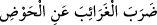
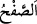
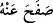
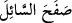

“Biz sizi ihmâl edip, Kur’ân’ı sizden uzaklaştırarak iyiliği emretmeyi ve kötülükten
alıkoymayı, diğer bir ifâdeyle vaad ve tehdîdi bırakalım mı? Hayır, böyle bir şey
yapmamız mümkün değil!”
Bu, mecâzî bir ifâde olup, Arapların istiâre-i temsiliye olarak “
/yabancı at ve develeri havuzdan uzaklaştırdı” sözünden alınmıştır. Burada Kur’ân’ın
hâli ve kâfirlerden uzaklaştırılması, yabancı at ve develerin hâline ve onların havuzdan
kovulup uzaklaştırılmasına benzetilmiştir. Sonra o kıssada kullanılan materyaller burada
da kullanılmıştır. Bu sözde yer alan “garâib” kelimesinden maksad “yabancı atlar ve
develer”dir. Bilindiği üzere at ve develer su içmek için havuz başına geldiğinde araya
yabancı bir at yahut deve girerse, yabancı at veya deve havuzdan kovulup uzaklaştırılır.
Dolayısıyla bu ifâdede, ilâhî hikmetin bir gereği aralarında bulunan pek derin alâkadan
dolayı Kur’ân’ın îman mahrumu müşriklere teveccühü dile getirilmektedir. Öyle ki,
sanki Kur’an onlara mevcut tavırlarının yanlış olduğunu ve bu tavırlarıyla
saçmaladıklarını haykırmaktadır.
“
/safh” yüz çevirmek demektir. “
” gibi olup “yüz çevirdi ve terk etti”
anlamındadır.
/affetti demektir.
/dilenciyi reddetti demektir. Affetmeye
“safh” denmiştir. Çünkü af, intikam almaktan yüz çevirmek demek olup “safhatü’l-vech”
kelimesinden alınmıştır. Zîrâ senden yüz çeviren, yüzünün yanını sana vermiş demektir.
Mânâ şöyledir: “Sizi uyarmaktan yüz çevirip vaz mı geçelim?” Bu durumda “safhan”
kelimesi mezkûr fiilin mefulu lehidir. Yahut “sâfihîne” yorumuyla haldir. Yahut değişik
lafızla mefulu mutlaktır. Çünkü zikri yani Kur’an’ı onlardan uzaklaştırmak,
kendilerinden yüz çevirmek mânâsını taşır.
“Siz, haddi aşan kimseler oldunuz diye…” “
/seref”, insanın yaptığı her işte
haddi aşmasını ifâde eden bir kelimedir. Âyet, “siz günahlar konusunda iyice israfa
dalıp, aşırı giderek onda ısrar etmekle haddi aşmış durumdasınız” anlamına
gelmektedir. Kasdedilen mânâ şöyledir: “Evet, aslında sizin durumunuz, sizi bu halde
kendinizle baş başa bırakıp böylece küfür ve sapıklık üzere ölerek ebedî azapta
kalmanızı gerektirir. Fakat biz rahmetimizin genişliğinden dolayı böyle yapmıyor, “ne
hâliniz varsa görün demiyor”, bilakis size güvenilir bir peygamber göndererek, açık ve
açıklayıcı bir kitap indirerek size gerçeği gösteriyor ve sizi doğru yola sevk ediyoruz.
Tibyân’da şöyle denmiştir: Siz ortak koşuyorsunuz diye Kur’ân’ı göğe
kaldırmayacağız. Çünkü biliyoruz ki yakında bir kavim gelecek, onu tasdik edip
ahkâmıyla amel edecektir.
Ancak, her şeye rağmen âhir zamanda Kur’an yeryüzünden kalkacaktır. Katâde şöyle
demiştir: Allah’a yemin olsun ki eğer izzet sâhibi Allah bu ümmetin ilk zamanlarında
yeryüzünden Kur’ân’ı kaldırmış olsaydı, kâfirlerin küfrü ve reddetmesi sebebiyle bütün
mahlûkatı helak ederdi de bir kişi bile kalmazdı. Fakat Hak Teâlâ onların inkâr ve
küfrüne değil, kendi fazl ve rahmetine baktı. Bu sebeple de Kur’ân’ı gün be gün tedricî
olarak gönderdi, tamamı ise yirmi ya da yirmi bir yılda indi. Böylece din işi tamamlandı